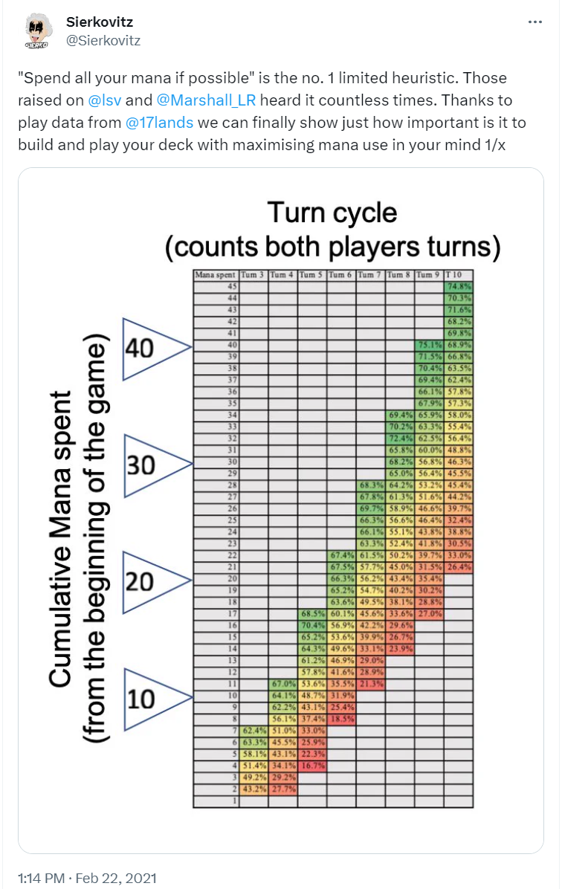
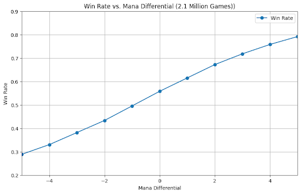
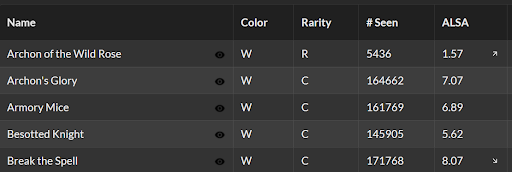
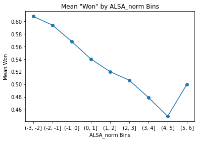
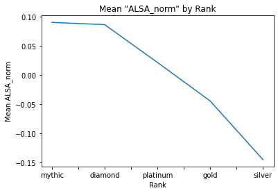
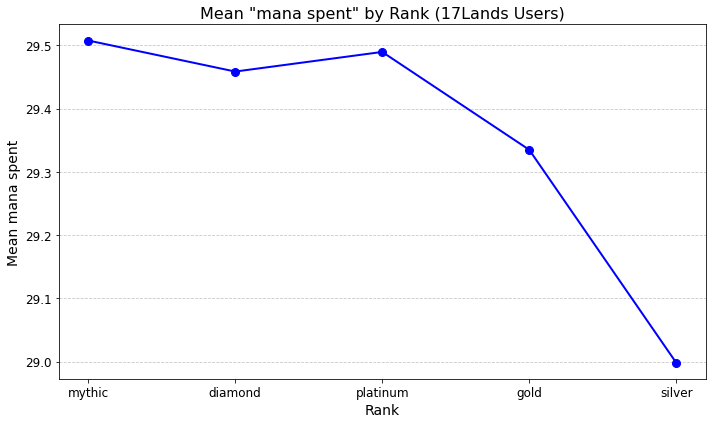
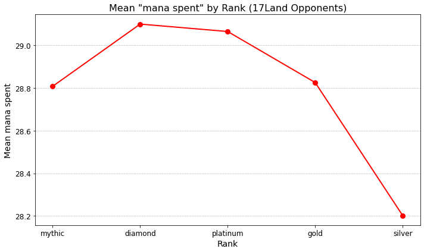
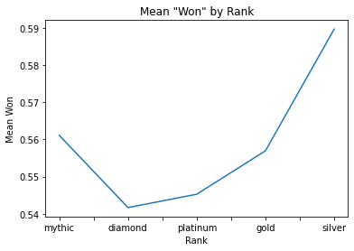
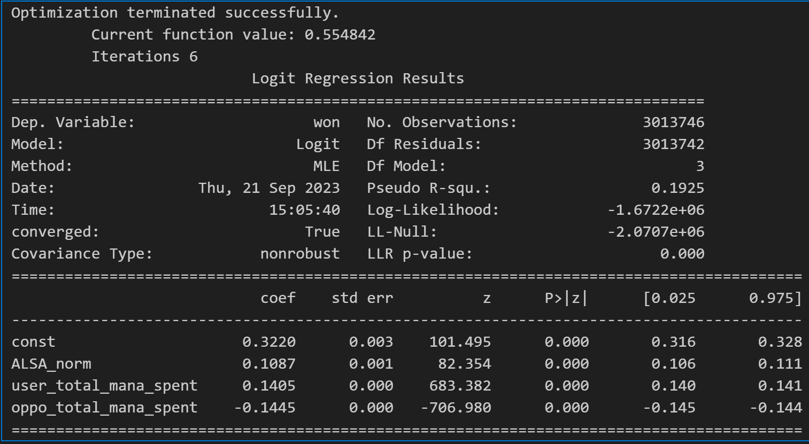
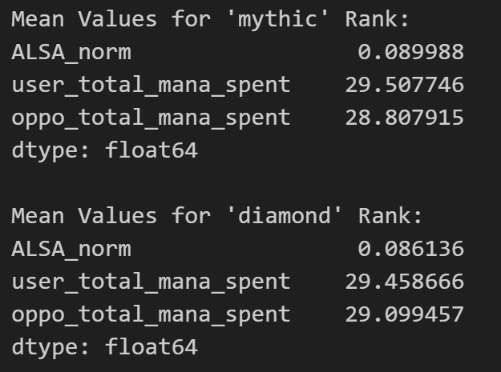

In this article, I will put forward my case that Mythic rank players in MTG Arena are worse at Magic than Diamond rank players (in Limited). However hilarious this may be, this fact was just an interesting byproduct of my investigation of a rule of thumb I have always heard about winning in Magic.
Format
- Winrate is at least partially a product of how much mana you spend
- How to quantify deck quality with ALSA
- Arguing mana spent is a metric of skill
- Mythic Players aren’t better deck builders than Diamond
- Modeling win rate with ALSA and mana difference is effective
- Results
Always Spend Your Mana
"I have heard Luis Scott Vargas say on his streams that he is 'amazed' how often the right play is the one that spends the most mana. @sierkovitz has done some work on it", and I wanted to see it for myself.
Sierkovitz looked at it from the lens of the 17lands user's perspective and their cumulative mana spent over the game. I am looking at the cumulative mana 'difference' between 17lands user and their opponent, but you see some very similar results as user total mana spent ("user mana" from here on out) and the difference between user mana and opponent mana ("mana difference" from here on out) are highly correlated.
This plot implies that if you can outspend your opponent by 5 mana, you should expect an 80% winrate, but if your opponent can outspend you by 5, expect a 30% win rate. There is a lot implied by how one achieves spending more mana than their opponent, but I won't cover that here.
It is safe to say it is a combination of two factors: how the deck was built (curve, color, ramp or card draw, etc...) and how the deck was used (player skill).
Quantifying Deck Quality
One major element of a deck's effectiveness is based on the quality of its cards. It is most of what limited players think about. I am using a metric from 17lands called "ALSA."
"ALSA" (average last seen at) is a metric that lets us know how valuable limited magic players think a card is. If it's good, it gets picked early in a draft, so the ALSA is very low (if you open a Archon of the Wild Rose pick 1 pack 1, almost everyone takes it) so the ALSA is 1.57 as it is usually picked first. A card no one wants like ‘Break the Spell’ has a high ALSA of 8.07.
When you take the average ALSA for a deck and plot it with win rate, note that the mean_ALSA (now normalized so 0 is average) correlates very strongly with win rate.
Mythic Players Aren’t Better Deck Builders than Diamond
(I flipped the ALSA values so positive is good and negative is bad now)
Note that diamond and mythic users have identical average ALSA in their decks, also note the trend decreases as the rank gets lower.
The subject of a larger inquiry I have is based on the mana curve of a deck's impact on spending mana, but I don't want to get into that here. Plus, it is largely tied to the user mana spent.
Spending Mana is a Byproduct of Skill
If we look at the plot of user mana spent based on rank, we see that it confirms some intuitions. Higher rank players spend more mana on average than lower players.
Using hypothesis testing, we can confirm that there is no significant difference between Mythic, Diamond, and Platinum players' ability to spend mana. However, there is a large statistical difference between this cohort and Gold, Silver, and Bronze players.
If we now look at the opponent mana spent, we see something quite different.
Here we see a similar trend everywhere in the data besides the opponents of Mythic players (Mythic opponents). Using hypothesis testing, there is a significant difference between the average mana spent between Mythic opponents and Diamond opponents. In fact, Mythic opponents spend mana at the same rate as Gold opponents.
I argue that this mana difference created by the poor play of Mythic 17lands users makes up a significant proportion of the additional win rate that Mythic players enjoy over their Diamond counterparts.
Modeling Win Rate with ALSA and Mana Difference
Below is a model of win rate as a function of a deck's average ALSA, the user mana spent, and the opponent mana spent.
This model explains 19% of the variance in win rate, which, given the inherent variance in Magic itself, is large enough to pay attention to.
Interpreting the Model
- Increasing your deck's ALSA by 1 standard deviation improves your probability of winning by about 10.5%. (Good cards help you win!)
- Increasing the mana you spend by just 1 over the course of an entire game increases your win rate by 15%.
- An opponent spending 1 less mana increases your chance of winning by another 15%.
This was the real core of my investigation. Even though the average ALSA metric is a very crude way to summarize the quality of a deck, I still think this implies that spending mana is more impactful to your chances of winning a game of Limited Magic than what is written on the cards themselves. There is a lot more work that needs to be done to prove this, let alone quantify it, but I think this is still a result worth sharing.
Why Mythic Players are Worse than Diamond Players
Assumptions:
- 17Lands users are a small fraction of total users.
- Although I have no proof of this, I feel it is a safe assumption that 17Lands users make up a tiny fraction of the MTG Arena userbase. One thought to support this is that the win rate for 17Lands users is 0.55, and the win rate across all MTG Arena has to be 0.5, which means 17Lands users are a small subset.
- The statistics of 17Lands opponents are more indicative of the true statistics for that rank.
- Because we are looking at the population means from the perspective of a small elite subset, we get a clearer picture by looking at the opponents rather than the 17Lands users.
We can now predict Mythic and Diamond win rates given the average values of ALSA, user mana spent, and opponent mana spent. (These averages were taken from a subset of data that was not used in building the model)

Difference in user mana: 0.049
Difference in opponent mana: -0.292
The difference in opponent mana is almost 6 times larger than the difference in user mana.
Mythic:
Predicted: 0.58
Actual: 0.56
Diamond:
Predicted: 0.56
Actual: 0.54
The predictions are a little high, but note the spread between them is the same. Our model is capturing at least the difference in win rate expected.
Conclusion: Mythic Players are Actually Bad…
Given that the model weights the effect of opponent mana slightly higher than user mana, and considering there is almost a statistically significant difference between Mythic opponents and Diamond opponents, I am confident in asserting that the increased win rate of 17Lands Mythic users is primarily due to the player pool in Mythic matchmaking. This pool appears to be less competitive than in Diamond and more comparable to the opponents of a Gold-ranked 17Lands user.
This analysis suggests that Mythic players might not be as skillful as their rank implies, benefiting instead from less challenging opponents. Thus, the apparent skill gap may be overstated, highlighting the importance of examining matchmaking dynamics when evaluating player performance.